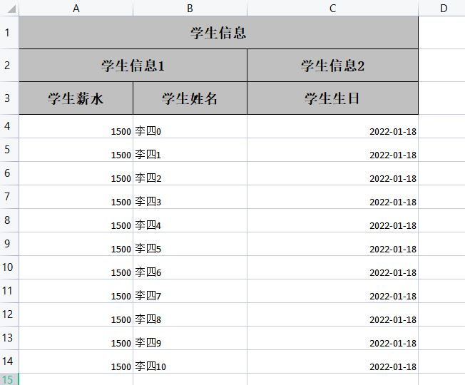
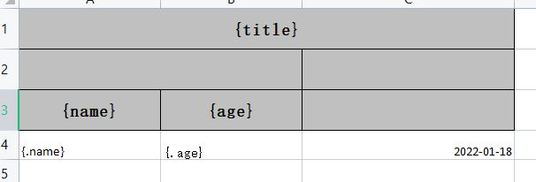
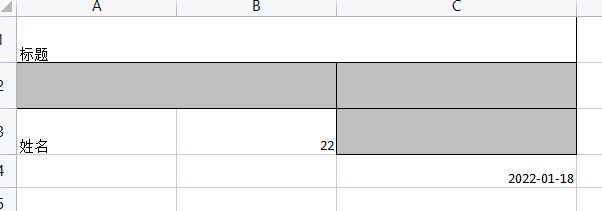

Java 处理 excel 表格
easyExcel 组件
参考文章：
1. 引入依赖
<!-- https://mvnrepository.com/artifact/com.alibaba/easyexcel -->
<dependency>
<groupId>com.alibaba</groupId>
<artifactId>easyexcel</artifactId>
<version>3.0.5</version>
</dependency>
2. 简单例子（实体类方式）
创建一个实体类Student：
import com.alibaba.excel.annotation.ExcelIgnore;
import com.alibaba.excel.annotation.ExcelProperty;
import com.alibaba.excel.annotation.format.DateTimeFormat;
import com.alibaba.excel.annotation.write.style.ColumnWidth;
import com.alibaba.excel.annotation.write.style.ContentRowHeight;
import com.alibaba.excel.annotation.write.style.HeadRowHeight;
import lombok.Data;
import java.io.Serializable;
import java.util.Date;
@Data
@HeadRowHeight(value = 35) // 表头行高
@ContentRowHeight(value = 25) // 内容行高
public class Student implements Serializable {
@ExcelProperty(value = {"学生信息","学生信息2","学生编号"},order = 10) //自定义title 和 order位置等级，值越大越靠后
@ColumnWidth(20) //自定义宽度
@ExcelIgnore //创建excel时忽略这个属性
private Integer id;
@ExcelProperty(value = {"学生信息","学生信息1","学生姓名"},order = 2)
@ColumnWidth(20)
private String name;
@ExcelProperty(value = {"学生信息","学生信息1","学生薪水"},order = 1)
@ColumnWidth(20)
private Double salary;
@ExcelProperty(value = {"学生信息","学生信息2","学生生日"},order = 11)
@DateTimeFormat("yyyy-MM-dd") //格式化日期 别导错了，是这个=>com.alibaba.excel.annotation.format.DateTimeFormat;
@ColumnWidth(30)
private Date birthday;
}
写一个测试类：
public List<Student> getData() {
return new ArrayList<Student>(){{
for (int i = 0; i < 10; i++) {
add(new Student(i, "name"+i, 1000.00+i, new Date()));
}
}};
}
@Test
void contextLoads() {
//第一个参数： 写出表格的文件名; 第二个参数：写到表格数据类型的class对象
EasyExcel.write("学生信息表.xlsx", Student.class) //创建一个表格，指定文件名，指定数据类型
// .registerWriteHandler(new LongestMatchColumnWidthStyleStrategy()) //自适应宽度，但是这个不是特别精确
.sheet() //指定sheet , 可以指定名字，也可以不写，使用默认的
.doWrite(getData()); //将数据写入表格中
}
运行后项目根目录就会出现一个文件
excel文件里就长这个样子 
还可以指定写
@HeadRowHeight(value = 35) // 表头行高
@ContentRowHeight(value = 25) // 内容行高
@Data
public class Student implements Serializable {
@ExcelProperty(value = {"学生信息","学生编号"},order = 10)
private Integer id;
@ExcelProperty(value = {"学生信息","学生姓名"},order = 2)
private String name;
@ExcelProperty(value = {"学生信息","学生薪水"},order = 1)
private Double salary;
@ExcelProperty(value = {"学生信息","学生生日"},order = 11)
@DateTimeFormat("yyyy-MM-dd")
private Date birthday;
}
@Test
void contextLoads() {
// 设置 要导出列的属性名
// 必须要跟类型的属性名保持一致
Set<String> set = new HashSet<>();
set.add("id");
set.add("name");
EasyExcel.write("学生信息表.xlsx", Student.class)
.includeColumnFiledNames(set)
// 自适应宽度，但是这个不是特别精确
.registerWriteHandler(new LongestMatchColumnWidthStyleStrategy())
.sheet()
.doWrite(getData());
}
3. 简单读
记住，这里传入的excel 表格式一定和实体类对应，不然会现数据读不全，读错
@Test
void test011(){
List<Student> list = new ArrayList<>();
EasyExcel.read("学生信息表.xlsx", Student.class, new AnalysisEventListener<Student>() {
// 每读取一行就调用该方法
@Override
public void invoke(Student student, AnalysisContext analysisContext) {
list.add(student);
}
// 全部读取完成就调用该方法
@Override
public void doAfterAllAnalysed(AnalysisContext analysisContext) {
System.out.println("全部读取完成");
}
}).sheet().doRead();
list.forEach(System.out::println);
/**
* 全部读取完成
* Student(id=null, name=李四0, salary=1500.0, birthday=Tue Jan 18 09:38:35 CST 2022)
* Student(id=null, name=李四1, salary=1500.0, birthday=Tue Jan 18 09:38:35 CST 2022)
* Student(id=null, name=李四2, salary=1500.0, birthday=Tue Jan 18 09:38:35 CST 2022)
* Student(id=null, name=李四3, salary=1500.0, birthday=Tue Jan 18 09:38:35 CST 2022)
* Student(id=null, name=李四4, salary=1500.0, birthday=Tue Jan 18 09:38:35 CST 2022)
* Student(id=null, name=李四5, salary=1500.0, birthday=Tue Jan 18 09:38:35 CST 2022)
* Student(id=null, name=李四6, salary=1500.0, birthday=Tue Jan 18 09:38:35 CST 2022)
* Student(id=null, name=李四7, salary=1500.0, birthday=Tue Jan 18 09:38:35 CST 2022)
* Student(id=null, name=李四8, salary=1500.0, birthday=Tue Jan 18 09:38:35 CST 2022)
* Student(id=null, name=李四9, salary=1500.0, birthday=Tue Jan 18 09:38:35 CST 2022)
* Student(id=null, name=李四10, salary=1500.0, birthday=Tue Jan 18 09:38:35 CST 2022)
*/
}
excel工具类 ExcelUtil.java
package com.example.demoeasyexclespringboot.util;
import com.alibaba.excel.EasyExcel;
import com.alibaba.excel.context.AnalysisContext;
import com.alibaba.excel.event.AnalysisEventListener;
import com.alibaba.excel.read.listener.ReadListener;
import com.alibaba.excel.support.ExcelTypeEnum;
import com.alibaba.excel.write.builder.ExcelWriterBuilder;
import com.alibaba.excel.write.style.column.LongestMatchColumnWidthStyleStrategy;
import org.apache.commons.lang3.StringUtils;
import org.springframework.util.CollectionUtils;
import org.springframework.web.multipart.MultipartFile;
import javax.servlet.http.HttpServletResponse;
import java.io.*;
import java.util.*;
public class ExcelUtil {
/**
* 写出一个 excel 文件到本地
* <br />
* 将类型所有加了 @ExcelProperty 注解的属性全部写出
*
* @param fileName 文件名 不要后缀
* @param sheetName sheet名
* @param data 写出的数据
* @param clazz 要写出数据类的Class类型对象
* @param <T> 写出的数据类型
*/
public static <T> void writeExcel(String fileName, String sheetName, List<T> data, Class<T> clazz) {
writeExcel(null, fileName, sheetName, data, clazz);
}
/**
* 按照指定的属性名进行写出 一个 excel
*
* @param attrName 指定的属性名 必须与数据类型的属性名一致
* @param fileName 文件名 不要后缀
* @param sheetName sheet名
* @param data 要写出的数据
* @param clazz 要写出数据类的Class类型对象
* @param <T> 要写出的数据类型
*/
public static <T> void writeExcel(Set<String> attrName, String fileName, String sheetName, List<T> data, Class<T> clazz) {
fileName = StringUtils.isBlank(fileName) ? "学生管理系统" : fileName;
sheetName = StringUtils.isBlank(sheetName) ? "sheet0" : sheetName;
try(FileOutputStream fos = new FileOutputStream(fileName)) {
write(fos,attrName,sheetName,data,clazz);
} catch (Exception exception) {
exception.printStackTrace();
}
}
/**
* 读取 指定格式的 excel文档
*
* @param fileName 文件名
* @param clazz 数据类型的class对象
* @param <T> 数据类型
* @return
*/
public static <T> List<T> readExcel(String fileName, Class<T> clazz) {
return readExcel(fileName, clazz, null);
}
/**
* 取 指定格式的 excel文档
* 注意一旦传入自定义监听器，则返回的list为空，数据需要在自定义监听器里面获取
*
* @param fileName 文件名
* @param clazz 数据类型的class对象
* @param readListener 自定义监听器
* @param <T> 数据类型
* @return
*/
public static<T> List<T> readExcel(String fileName, Class<T> clazz, ReadListener<T> readListener) {
try(FileInputStream fis = new FileInputStream(fileName)) {
return read(fis,clazz,readListener);
} catch (Exception exception) {
exception.printStackTrace();
}
return null;
}
/**
* 导出 一个 excel
* 导出excel所有数据
* @param response
* @param fileName 件名 最好为英文，不要后缀名
* @param sheetName sheet名
* @param data 要写出的数据
* @param clazz 要写出数据类的Class类型对象
* @param <T> 要写出的数据类型
*/
public static <T> void export(HttpServletResponse response, String fileName, String sheetName, List<T> data, Class<T> clazz) {
export(response, null, fileName, sheetName, data, clazz);
}
/**
* 按照指定的属性名进行写出 一个 excel
*
* @param response
* @param attrName 指定的属性名 必须与数据类型的属性名一致
* @param fileName 文件名 最好为英文，不要后缀名
* @param sheetName sheet名
* @param data 要写出的数据
* @param clazz 要写出数据类的Class类型对象
* @param <T> 要写出的数据类型
*/
public static <T> void export(HttpServletResponse response, Set<String> attrName, String fileName, String sheetName, List<T> data, Class<T> clazz) {
fileName = StringUtils.isBlank(fileName) ? "student-system-manager" : fileName;
sheetName = StringUtils.isBlank(sheetName) ? "sheet0" : sheetName;
response.setContentType("application/vnd.ms-excel;charset=utf-8");
response.setCharacterEncoding("utf-8");
response.addHeader("Content-disposition", "attachment;filename=" + fileName + ExcelTypeEnum.XLSX.getValue());
try(OutputStream os = response.getOutputStream()) {
write(os,attrName,sheetName,data,clazz);
} catch (IOException e) {
e.printStackTrace();
}
}
/**
* 接收一个excel文件，并且进行解析
* 注意一旦传入自定义监听器，则返回的list为空，数据需要在自定义监听器里面获取
* @param multipartFile excel文件
* @param clazz 数据类型的class对象
* @param readListener 监听器
* @param <T>
* @return
*/
public static <T> List<T> importExcel(MultipartFile multipartFile,Class<T> clazz,ReadListener<T> readListener) {
try(InputStream inputStream = multipartFile.getInputStream()) {
return read(inputStream,clazz,readListener);
} catch (IOException e) {
e.printStackTrace();
}
return null;
}
private static <T> void write(OutputStream os, Set<String> attrName, String sheetName, List<T> data, Class<T> clazz) {
ExcelWriterBuilder write = EasyExcel.write(os, clazz);
// 如果没有指定要写出那些属性数据，则写出全部
if (!CollectionUtils.isEmpty(attrName)) {
write.includeColumnFiledNames(attrName);
}
write.registerWriteHandler(new LongestMatchColumnWidthStyleStrategy()).sheet(sheetName).doWrite(data);
}
private static <T> List<T> read(InputStream in,Class<T> clazz, ReadListener<T> readListener) {
List<T> list = new ArrayList<>();
Optional<ReadListener> optional = Optional.ofNullable(readListener);
EasyExcel.read(in, clazz, optional.orElse(new AnalysisEventListener<T>() {
@Override
public void invoke(T data, AnalysisContext context) {
list.add(data);
}
@Override
public void doAfterAllAnalysed(AnalysisContext context) {
System.out.println("解析完成");
}
})).sheet().doRead();
return list;
}
}
使用模板
1. map类型传参
2.实体类型传参
例子1
模板样子

注意，这里需要循环的数据需要用.表示：
{.name}表示是对象中的属性
@Test
void test05(){
//准备模板
String template = "a.xlsx";
ExcelWriterBuilder builder = EasyExcel.write("hqqich.xlsx", Map.class).withTemplate(template);
//准备map数据
Map<String, Object> map=new HashMap<>();
map.put("title", "标题");
map.put("name","姓名");
map.put("age",22);
//简单写
builder.sheet().doFill(map);
}
写入后样子

可以看到样式被清楚了，弊端
例子2
//FileData
@Data
@NoArgsConstructor
@AllArgsConstructor
public class FileData {
private String age;
private String name;
}
//测试方法
@Test
void test06(){
ExcelWriterBuilder builder = EasyExcel.write("hqqich.xlsx", FileData.class).withTemplate("a.xlsx");
List<FileData> fileDataList = new ArrayList<FileData>(){{
add(new FileData("100", "hqqich"));
add(new FileData("200", "hqqich"));
add(new FileData("300", "hqqich"));
add(new FileData("400", "hqqich"));
add(new FileData("400", "hqqich"));
add(new FileData("400", "hqqich"));
add(new FileData("400", "hqqich"));
add(new FileData("400", "hqqich"));
add(new FileData("400", "hqqich"));
add(new FileData("400", "hqqich"));
add(new FileData("400", "hqqich"));
add(new FileData("400", "hqqich"));
add(new FileData("400", "hqqich"));
add(new FileData("400", "hqqich"));
add(new FileData("400", "hqqich"));
add(new FileData("400", "hqqich"));
add(new FileData("400", "hqqich"));
add(new FileData("400", "hqqich"));
add(new FileData("400", "hqqich"));
add(new FileData("400", "hqqich"));
}};
builder.sheet().doFill(fileDataList);
}
写入后的样子

可以看到，循环的的单元格样式被保留下来了
例子3
@Test
@SneakyThrows
void test08(){
//创建.关联文件
ExcelWriter build = EasyExcel.write("hqqich.xlsx").withTemplate("a.xlsx").build();
//工作区对象
WriteSheet sheet = EasyExcel.writerSheet().build();
//渲染数据
List<FileData> fileDataList = new ArrayList<FileData>(){{
add(new FileData("100", "hqqich"));
add(new FileData("200", "hqqich"));
add(new FileData("300", "hqqich"));
add(new FileData("400", "hqqich"));
add(new FileData("400", "hqqich"));
add(new FileData("400", "hqqich"));
add(new FileData("400", "hqqich"));
add(new FileData("400", "hqqich"));
add(new FileData("400", "hqqich"));
add(new FileData("400", "hqqich"));
add(new FileData("400", "hqqich"));
add(new FileData("400", "hqqich"));
add(new FileData("400", "hqqich"));
add(new FileData("400", "hqqich"));
add(new FileData("400", "hqqich"));
add(new FileData("400", "hqqich"));
add(new FileData("400", "hqqich"));
add(new FileData("400", "hqqich"));
add(new FileData("400", "hqqich"));
add(new FileData("400", "hqqich"));
}};
HashMap<String, Object> hashMap = new HashMap<String, Object>(){{
put("title", "标题");
put("name", "用户姓名");
put("age", "用户年龄");
}};
//添加数据
build.fill(fileDataList, sheet);
build.fill(hashMap, sheet);
//保存
build.finish();
}
写入后的样子

可以看到（标题栏，循环的数据）中的样式都被保留下来了
例子3的另一种写法
@Test
@SneakyThrows
void test09(){
//创建.关联文件
ExcelWriter build = EasyExcel.write("hqqich.xlsx").withTemplate("a.xlsx").build();
//工作区对象
WriteSheet sheet = EasyExcel.writerSheet().build();
//渲染数据
List<Map<String, Object>> fileDataList = new ArrayList<Map<String, Object>>(){{
for (int i = 0; i < 10; i++) {
int finalI = i;
add(new HashMap<String, Object>() {{
put("name", "hqqich"+ finalI);
put("age", 22+ finalI);
}});
}
}};
HashMap<String, Object> hashMap = new HashMap<String, Object>(){{
put("title", "标题");
put("name", "用户姓名");
put("age", "用户年龄");
}};
//添加数据
build.fill(fileDataList, sheet);
build.fill(hashMap, sheet);
//保存
build.finish();
}
例子4
@Test
void test061(){
ExcelWriterBuilder builder = EasyExcel.write("hqqich.xlsx", Map.class).withTemplate("a.xlsx");
List<Map<String, Object>> fileDataList = new ArrayList<Map<String, Object>>(){{
for (int i = 0; i < 10; i++) {
int finalI = i;
add(new HashMap<String, Object>() {{
put("name", "hqqich"+ finalI);
put("age", 22+ finalI);
}});
}
}};
builder.sheet().doFill(fileDataList);
}
写入后的样子